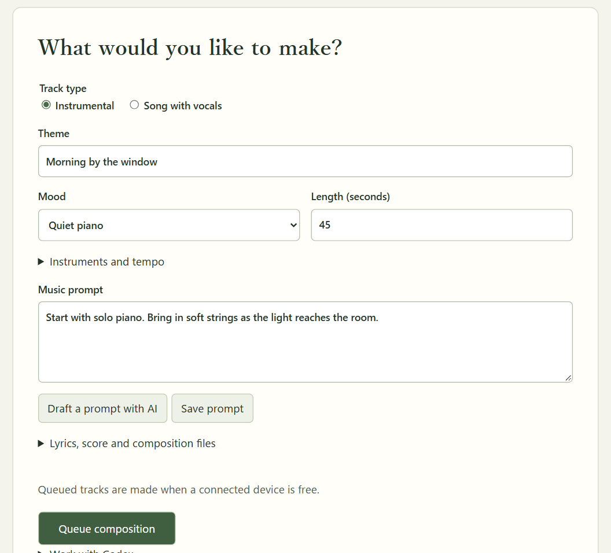
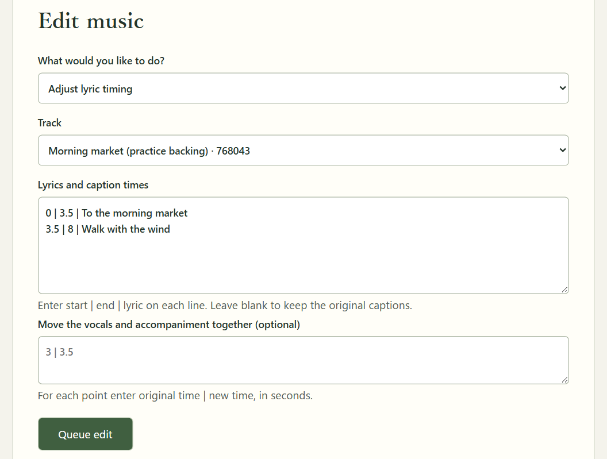
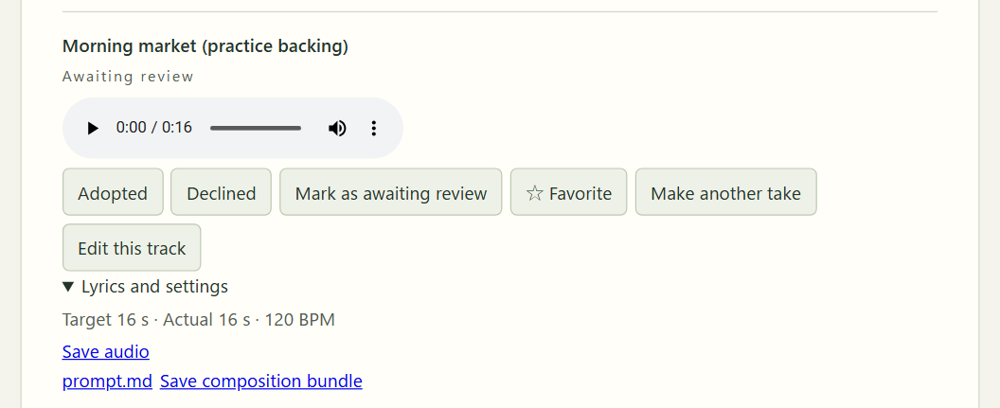
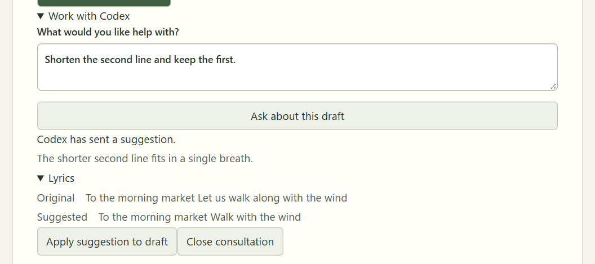

Sound Atelier user guide
Follow the actual screens from your first connection to auditioning and editing a finished track. Select any screenshot to open the full-size image.
1. Connect your music server
- Start Atelier on the computer you use for browsing and open http://localhost:39395/.
- Choose Import a connection file and select connection.json from the API on the GPU machine. This file contains your private client token.
- Wait for Online next to the server name. Import additional files to add servers, then choose which one to use.

2. Compose and queue a track
- Open Compose and choose Instrumental or Song with vocals. Give the track a theme, mood and target length.
- For a vocal track, enter only the lines to sing. Use Music prompt for instructions such as “start with solo piano.”
- Select Queue composition. Your request waits for a connected device to have spare capacity.

3. Follow the queue
- Open Queue and history and find the title. A queued job shows its position on the device.
- Once it is in progress, you can see the assigned device and progress. Select Cancel if you need to stop the job.
- When the track is ready, select Listen. For vocals, review the lyric audit and any passages that need another listen.

4. Listen and select a take
- Open Library and play the recording.
- Use Adopted for the take you want to use or Favorite to keep it easy to find. Open Lyrics and settings to see the lyrics and measured duration.
- Select Edit this track to work on a passage. Make another take queues a new job with the same settings.

5. Select and edit a passage
- Choose Trim and fade. Tap the waveform to move the playhead or drag to select a passage. You can also type a start and end time in seconds.
- Use Play selection to check the boundaries. Zoom to selection and Loop selection help you refine them. Use Snap to bars for music with a steady tempo.
- To replace a passage, choose Replace a passage with another track, select a donor and enter its start time. Select Queue edit to create the revised track.

6. Revise the lyrics
Change the words you hear
If “Let us walk along with the wind” takes too much breath, try “Walk with the wind.” In Compose, choose Song with vocals. Enter one sung line per line in Lyrics.
To the morning market
Walk with the windPut directions such as “start with piano” or “sing the second line softly” in Music prompt. Leave headings such as [Intro] out of the lyrics. To revise a finished song, open its Lyrics and settings in Library and choose Save composition bundle. In Compose, open Lyrics, score and composition files and import that ZIP. Edit Lyrics and select Queue composition for a new take. You can also import a UTF-8 lyrics.txt here to replace the words in your draft.
Correct the pronunciation of a Japanese word
To keep the written word 市場 and have it sung as しじょう (shijō), open the reading substitutions field under Lyrics, score and composition files before queuing. For a finished song, use Library → Edit this track → Correct a pronunciation. In Word and pronunciation, enter one pair per line.
市場 → しじょうEach substitution applies to every occurrence across the lyrics. To target a specific phrase, include its surrounding words, for example 市場へ → しじょうへ. Select Queue edit and check the attempt count and any “Review needed” passages in Queue and history. The reference vocal worker checks up to three takes. Listen to the original and revised takes before adopting your choice.
Adjust when a line appears or when the performance comes in
Choose Edit this track → Adjust lyric timing. For captions only, enter the complete set of lines you want to keep in Lyrics and caption times, with start seconds | end seconds | words on each line. Here the second line appears at 3.5 seconds. Leave the optional audio timing field empty.
0 | 3.5 | To the morning market
3.5 | 8 | Walk with the wind
To move a sung entrance from 4 to 4.5 seconds, enter 4 | 4.5 in Move the vocals and accompaniment together. This stretches the preceding interval and moves both the voice and its backing. Leaving the caption field empty carries over the existing cues. Select Queue edit, then listen and watch the revised take in Library. To use a different vocal performance for one passage, make another take and replace the passage in the waveform editor.
7. Download the files you made
- When your job shows Ready in Queue and history, choose Listen. You can also open the take directly in Library.
- Check the title and play the take. Expand Lyrics and settings below it and select Save audio. Your browser downloads
track title.wavto the computer you are using. For an edit or a mix, open the new take to save that version. - Open your browser’s download history and choose Show in folder, or look in the folder you selected when prompted. The steps are the same when the GPU runs in the cloud.

Choose the files you need
- To listen or use the recording in a video, save the WAV.
- To edit the words or instructions, select
lyrics.txt(written lyrics),prompt.md(music prompt) orscore.abc(score) in the same panel. If listed,singing.txtcontains the text after pronunciation substitutions. Available files depend on the take. - To continue composing on another computer, choose Save composition bundle. Import
composition.zipunder Lyrics, score and composition files on the other computer. This ZIP contains the settings and available materials. Save the WAV separately if you also need the recording. - To reproduce a take, save
generation.jsonwhen offered, import it and choose Reproduce original take. Check the resulting audio verification when the job finishes.
Jobs queued through Codex or Claude Code appear in the same Library. Try “When the job finishes, give me the track ID and the link to open the audio on this computer.” If the take includes WebVTT captions, open http://localhost:39395/tracks/TRACK_ID/captions on the Atelier computer and save the subtitles. On another computer, open that computer’s Atelier and select the same server.
Save a WAV directly using a track ID
On the computer running Atelier, open a terminal in the folder where you want the download. Replace TRACK_ID with the finished track’s ID and my-take.wav with your preferred filename. On Windows run:
curl.exe --fail --output my-take.wav http://localhost:39395/tracks/TRACK_ID/audioOn Linux, use curl in place of curl.exe.
8. Work on lyrics with Codex or Claude Code
SKILL.md gives your assistant instructions for reading a composition request and sending a suggested lyric or prompt back to your screen. MCP connects the assistant to the running Atelier. On the computer running the assistant, start Atelier, import connection.json and select your music server.
Copy the whole skills/theoriacast-music/ folder from the extracted Atelier download. Keep SKILL.md and references/ja.md together in their original layout. Read the skill on GitHub.
With Codex
- Place the folder in your working project so the file is at
.agents/skills/theoriacast-music/SKILL.md. - Run these commands in a terminal on the same computer. Open a new Codex conversation in the project.
codex mcp add theoriacast-music --url http://localhost:39395/mcp
codex mcp listIn the conversation, ask $theoriacast-music Check which music devices are available. Codex skills · MCP setup
With Claude Code
- Place the folder in your working project so the file is at
.claude/skills/theoriacast-music/SKILL.md. - Run these commands from the project directory. Look for
Connected, then open Claude Code there.
claude mcp add --transport http theoriacast-music http://localhost:39395/mcp
claude mcp get theoriacast-musicIn the conversation, enter /theoriacast-music Check which music devices are available. You can also check the connection with /mcp. Claude Code skills · MCP setup
Get a suggestion back in Atelier with either assistant
- Enter your lyrics. Open Work with Codex in Atelier. Version 0.1.0 uses this label for Claude Code too. Ask “Shorten the second line so I can sing it in one breath. Keep the first line.” Choose Ask about this draft.
- Select Copy request and paste it into your chosen assistant’s conversation. The copied request contains the consultation ID. Atelier handles the connection file and token locally.
- Return to Atelier and compare the original lyrics with the suggestion. Select Apply suggestion to draft to put the words in the form. You can edit them again. When ready, select Queue composition, then download the finished audio.

For a finished vocal take, try “Regenerate this track with 市場 pronounced しじょう and give me the job ID.” Include the track ID. This requests a new recording. Asking for feedback on an open draft returns a suggestion for you to review.
Import and save composition materials
In Compose, open Lyrics, score and composition files to import or save lyrics.txt, score.abc, editable composition.json or a ZIP. Use Save prompt below Music prompt to export prompt.md.
To join or layer takes, use Join or layer tracks and set the gain and crossfade.